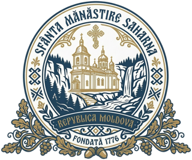

Sfânta MănăstireSaharna
Raionul Rezina · Malul drept al Nistrului
Casa Sfintei Treimi, între stânci și ape
Următoarea slujbă: Vecernia — Azi, 17:00 (în curând)
Programul slujbelor
Slujbe în fiecare zi a anului
Dimineața, la amiază și seara. În zilele de sărbătoare programul se poate schimba.
Cum ajungeți
La 110 km de Chișinău
În satul Saharna, raionul Rezina. Porțile sunt deschise zilnic între orele 08:00 și 20:00.
Pomelnic
Trimiteți un pomelnic
Numele celor dragi, vii și adormiți, vor fi pomenite de părinții mănăstirii la Sfânta Liturghie.
Donații
Sprijiniți sfânta mănăstire
Mănăstirea se întreține din jertfa credincioșilor. Fiecare dar ajută bisericile, pelerinii și pe cei aflați în nevoie.
Despre mănăstire
Din 1776, pe malul Nistrului
Una dintre cele mai vechi și mai cunoscute mănăstiri din Moldova, cu moaștele Sfântului Cuvios Macarie.